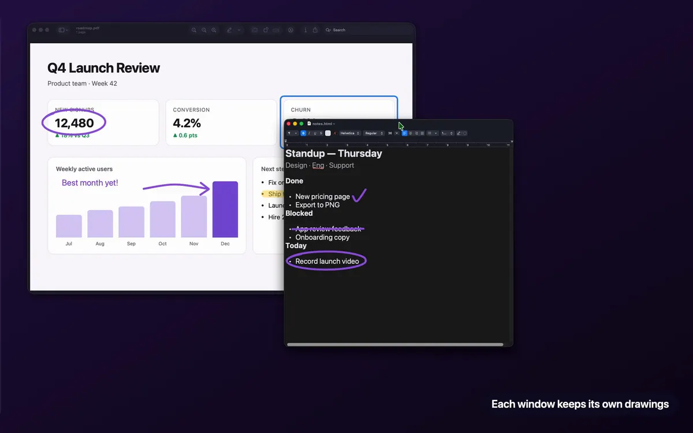

How to draw on your Mac screen
Circle a number, underline a line of code, sketch an idea over whatever's open. Here's how to do it on a Mac, what's free, and the one feature that keeps your drawings where they belong.
macOS can't draw over live apps on its own. Install a screen drawing app such as JellyDraw (free), press ⌃⌥⌘Space, and draw with the pen or highlighter over anything on screen.
- Only marking up a screenshot? Use macOS Markup, which is built in.
- In a video call? Share your entire screen so people see your drawings.
How to draw on your Mac's screen, step by step
- Download JellyDraw. Get the free download from jellydraw.app. It's notarized by Apple, so it opens like any other Mac app, and it updates itself.
- Allow Accessibility access. When JellyDraw asks, turn it on in System Settings › Privacy & Security › Accessibility. JellyDraw uses it only to read where your windows are and how big they are, so drawings can follow them.
- Bring up JellyDraw over any app. Press ⌃⌥⌘Space (Control-Option-Command-Space). JellyDraw floats over whatever app you're in.
- Draw. Pick the pen to write or circle things, or the highlighter to mark text without hiding it. Use the eraser to fix mistakes.
- Move the window. Drag, switch or minimize the window you drew on. The drawing stays attached to that window instead of staying stuck to the screen.
- Need a blank page?. Turn on whiteboard mode to sketch or explain something on a clean canvas. It's included in the free version.
Why window anchoring matters
Most screen drawing apps put one transparent sheet over your whole screen. That's fine until you move something: you circle a number in a spreadsheet, drag the window aside, and the circle is now floating over empty desktop.
JellyDraw ties each drawing to the app window you drew it on. Move the window and the drawing moves with it. Minimize it and the drawing comes back when the window does. Switch between your browser, your slides and your editor, and each one keeps its own notes.

One thing to know: JellyDraw follows the window's position and size, not what's inside it. If you scroll a page or change slides, the drawing stays where it is on the window. Erase it and draw again on the new content.
What's free and what's Pro
Pen, highlighter, eraser, whiteboard mode and window anchoring.
Adds shapes, lines, text, export and accent colors. One-time purchase through Lemon Squeezy, no subscription. One license covers up to 5 of your Macs, with a 14-day refund.
Most people who just want to circle, underline and highlight never need Pro.
Other ways to draw on a Mac screen
- macOS Markup works on screenshots, PDFs and images, not live apps. Press ⇧⌘4, select an area, then click the thumbnail that appears to mark it up.
- Meeting apps like Zoom have their own annotation tools that only work inside a call. See drawing during Zoom, Meet and Teams calls.
- Other apps: compare JellyDraw, Presentify, ZoomIt and more in the best screen drawing apps for Mac, or see every free option.
Draw on your Mac's screen for free
The free version has no time limit and includes window anchoring. Pro is a one-time $9.99 if you ever want shapes, text and export.
Free download from jellydraw.app · Notarized by Apple · macOS 26.2 or later on Apple Silicon
Questions
Can I draw on my Mac screen for free?
Yes. JellyDraw's free version has no time limit and includes the pen, highlighter, eraser, whiteboard mode and window anchoring. macOS Markup is also free but only works on screenshots, PDFs and images.
What's the keyboard shortcut to draw on screen?
In JellyDraw, press Control-Option-Command-Space (⌃⌥⌘ Space) to bring it up over any app.
Do my drawings stay put when I switch apps or move a window?
With JellyDraw, yes. Drawings stick to the window they were drawn on and move with it, including when you minimize it and bring it back.
Does JellyDraw record or read my screen?
No. It works offline, never records your screen and never reads what's inside your windows. The Accessibility permission is used only to read window positions and sizes on your Mac.
Will it run on my Mac?
JellyDraw needs a Mac with Apple Silicon (M1 or later) running macOS 26.2 Tahoe or later. It doesn't support Intel Macs.